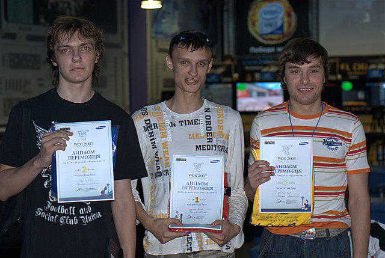
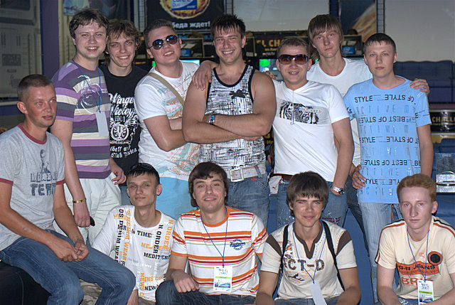
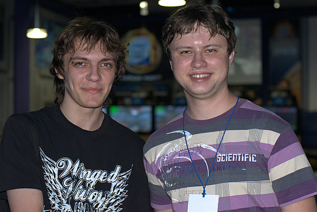

Это реконструированный сайт topw3.narod.ru | Харьков 2005-2007
ToP on WCG2007: Донецк
Немного запоздало, мы представляем вашему вниманию отчет с триумфальной для нас поездки в Донецк, на отборочные WCG. Долгий год мы шли к этому. 3 выездных турнира., многочисленный внутренние чемпионаты, закрытые клановые тренировки и неумолимая жажда прогресса, вот то, что стало причиной успеха нашего игрока. Год назад наши игроки на Харьковских отборочных WCG смотрелись не более чем статистами и это было сложно оспорить. Но теперь, спустя год наши игроки выросли в реальную, конкурентоспособную силу и даже недоброжелатели, отныне вынуждены это признать. Впрочем обо всем по порядку…
15 июля представители команды ТоР в скромном составе Ехе+ Gannibal (т.е. я :D) высадились на ЖД вокзале славного города Донецка. Недолгие поиски маршрутки (уехали все равно на рогатом тралике :D) и вот мы уже едем в клуб. Прибыли рано, не успев даже перекусить. Несмотря на то, что клуб еще был закрыт, администраторы благосклонно разрешили нам сесть разыграться, что мы незамедлительно и проделали. После пары сыгранных игр, Ехе заявляет, что играть на дефалтной клубной клавиатуре невозможно и мы, удостоверившись, что времени в запасе еще достаточно срываемся из клуба в поисках супермаркета электроники, где Ехе мог купить более удобную для него клавиатуру. Несмотря на то, что подобное заведение находилось буквально за углом прямо в здании клуба мы ухитрились пройти целую остановку, ничего не нашли и лишь на обратном пути увидели магазин в котором Ехе и приобрел заветный девайс.
По прибытии в клуб мы обнаружили, что торопились зря. Только-только началась регистрация фиферов, поэтому у нас было время отдохнуть и пообщаться со странными знакомыми посетившими турнир как в качестве игроков (mart.Death) так и в роли простых болельщиков (knet.Matrix). Постепенно дошел черед и до war3 регистрации. Всего на турнир зарегистрировалось 22 участника, среди которых семеро были иногородними игроками. Сразу после регистрации- игрокам дали возможность сесть за компы и начать настройку и разыгровку. Процедура составления сетки тоже не заняла много времени…
Оглашение сетки прозвучало как гром среди ясного неба и почти убило надежды ТоР-ов на квоту. Первый же тур наш сильнейший игрок, на которого возлагались надежды играл с… egp.tt.Sonik-ом. Наше настроение существенно испортилось и за игры мы сели отнюдь не в лучшем расположении духа…
Традиционно начну со своего выступления. В первом туре сетка свела меня с орком- x3Frozen-ом, который оказался довольно слабым и не оказал особенного сопротивления проиграв на двух картах (Ei, TM)- 2:0. Вторым в моей сетке оказался андед A(Iex, с которым противостояние оказалось КРАЙНЕ затяжным. Первую карту я убедительно и гиперсильно выиграл, поставив эксп, а затем просто заабузив пауками и вирмами под грейдами 2-2. На второй карте я так же уверенно доминировал, но приняв битву на крипинге, потерял все преимущество и в итоге отдал игру. Третья карта- TM, была без шансов для меня. 1:2, падения в лузера- обидно… Ну в общем то на это мое выступление и закончилось. В лузерах я попался с неким Pafisnim4uvak-ом, который на ТМ банально задаваил фаст мишками не дав достроить вирмов… Я перехожу из разряда игроков в разряд наблюдателей, остановившись на стадии топ-12…
А вот поход Ехе по сетке развивался как в кино. Первый же тур принес Андрей закономерное падение в лузера- 0:2. И после этого Ехе пошел… В первом туре лузеров Ехе встречался с эльфом tk.Ched-ом, который не смог оказать особого сопротивления. Второй и третий туры принесли Андрею не слишком сложные победы над эльфом Брат-ом и тем самым Алексом. Но дальше все было не так просто: на стадии топ-8 Ехе встречается с эльфом Fors)Cap-ом, который уже трижды (!!!) брал призовые места на отборочных WCG прошлых лет. Тем не менее опытный соперник не стал для нашего игрока загадкой и на TS Ехе застраивает Кепа, проходя в топ-6… Где его ждал очередной эльф n1ce. Убив сопернику барак на крипинге (!!!) Андрей уже не упускает преимущество… топ-4 и две игры до квоты. Первым из двух оставшихся соперников становится Вольверин, молодой эльф, упорно тренировавшийся специально для этого турнира. И именно игру с ним Ехе после турнира назвал наиболее тяжелой. Одолев соперника на ТМ по своей отработанной стратегии потма+дарка Андрей проходит в топ-3…
Мои нервы не выдержали и не в состоянии смотреть игру с BB.CtpaxoB-ым я отправился смотреть на игры кс-ров, которые в это время играли на сцене. Спустя 10 минут страхов выходит из ряда компьютеров и идет к Веге… На мой вопрос «как сыграли?» он отвечает «та ну бред»… ToP)Exe-берет квоту в всеукраинский финал WCG 2007…
А финал… финал не принес особой интриги. Все тот же Сонник берет на первой карте орков и… проигрывает подарив ТоР-ам надежду на сенсацию, которую тут же убил зарашив на второй карте хантами за 7 минут…
А дальше было традиционное «празднование» после которого мы едва приползли назад в клуб. На следующий день мы были уже на пути домой… Мы гордимся своим чемпионом!
P.S. Клан ТоР выражает благодарность всем работникам к.к. «КиберАрена», которые разрешили нам переночевать в зоне отдыха клуба и приветливо обращались с нами все время пребывания в Донецке, личная благодарность Тафе, который сделал подобный прием возможным. Так же мы благодарим представителей правопорядка (!!!), которые на ЖД вокзале в Харькове подсказали нам нужную платформу, благодаря чему мы все же успели на поезд…
P.P.S. СРОЧНО В НОМЕР (:D) после отказа симферопольского игрока Lizard-а от участия в финальной части НЛКИ в серии ПРО, его квота была отдана «выдающемуся и быстро прогрессирующему игроку, который мы уверены, покажет интересную и креативную игру». Именно так говорится в официальном релизе. Угадайте о ком идет речь… :D
P.P.P.S. мини фотогаллерею с Донецких отборочных ждите у нас на сайте, сразу после ее официальной публикации организаторами ивента.
P.P.P.P.S. Чемпионат привлекал огромное внимание. Вашему вниманию предлагаются сопутствующие материалы:
Сетка чемпионата
Обзор чемпионата by gameinside
Демопак с турнира от нашего клана уже находится у нас на сайте в разделе "файлы". Полный демопак ищите на портале Gameinside в течении нескольких дней.
update 19.07: мини фото-галлерея с турнира by clan ToP

(победители турнира- ToP)Exe, egp.Sonik, BB.CtpaxoB)
(Донецкий движ-картина маслом. Вся элита Донецких отборочных на общем фото :D)

(Gannibal и Ехе после турнира. Уставшие, довольные и еще не выпившие :D)